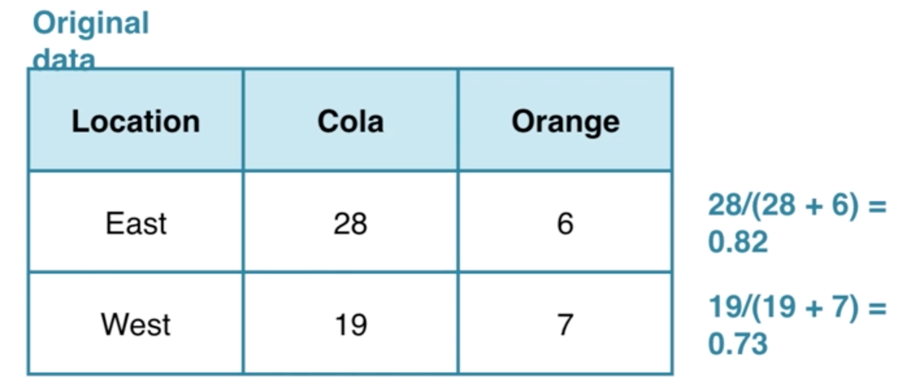

The idea behind statistical inference is to understand samples from a hypothetical population where the null hypothesis is true.
- Null hypothesis(H0)：The claim that is not interesting
- Alternative hypothesis (Ha): The claim corresponding to the research hypothesis.
- Example:
- H0: from East and West Coasts, where cola preference is the same
- Ha: The West Coast likes cola more than the East
- Null distribution: generating a distribution of the statistic from the null population gives information about whether the observed data are inconsistent with the null hypothesis.
The statistic is the difference in the proportion of West Coast people who prefer cola as compared with the proportion of East Coast people who prefer cola. The difference in the sample proportion changes within each sample.
We can build a distribution of differences in proportions assuming the null hypothesis, that there is no link between location and soda preference, is true. Natural variability can be modeled from shuffling observations around to remove any relationships that might exist in the population. 
Take home ownership as another example. Find the observed difference in proportions of men who own a home and women who own a home.
library(NHANES)
homes <- NHANES %>%
# Select Gender and HomeOwn
select(Gender, HomeOwn) %>%
# Filter for HomeOwn equal to "Own" or "Rent"
filter(HomeOwn %in% c("Own", "Rent")) %>%
group_by(Gender) %>%
summarize(prop_own = mean(HomeOwn == 'Own')) %>%
summarize(diff_orig = diff(prop_own))